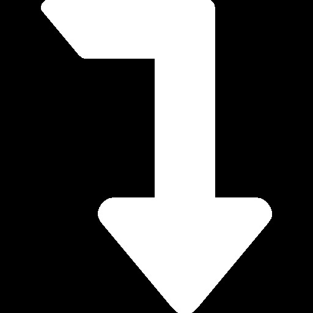

|
|
Comandante Director General
|
 |
|---|---|---|---|
| |
Directores de División
|
Directores de Cuartel
|
Directores de Departamento
|
| Agentes del Comandante | Agentes de División | Agentes de Cuartel | Personal de Departamento |
Son agentes que se especializan el armas cuerpo a cuerpo. Como katanas, escudos, espadas,...
| Nombre | Aspecto | Descripción |
|---|---|---|
| Categoría: | Equipo Estándar | |
| Bail Out |  |
Trigger obligatorio para los agentes de rango C o superior; este seencarga de teletransportar al usuario a la base cuando este queda fuera de combate |
| Radar |  |
Trigger detecta la posición de los enemigos dentro de un área |
| Trion Body |  |
Los cuerpos de Trion son el implemento más básico otorgado por Triggers. Son virtualmente invulnerables a daños que no son causados por Trion (y por lo tanto por Triggers) también le otorgan al usuario varias mejoras físicas, así como un sistema de comunicación interno |
| Categoría: | Armas Atacante | |
| Kogetsu |  |
El primer Trigger de Ataques que se creó y el más popular. Es un arma moderadamente pesada con un poder de ataque y durabilidad muy altos. Se considera el más equilibrado |
| Raygust |  |
Un Trigger de ataque orientado a la defensa pues puede transformarse en un escudo, fue el último de los tres principales que se inventaron. Tiene un bajo poder ofensivo y es muy pesado; lo hacen impopular entre los atacantes. No obstante, es muy resistente y su durabilidad aumenta aún más en el modo de escudo |
| Scorpion |  |
Un Trigger que es hoja que se puede extraer de cualquier parte del cuerpo y cuya forma se puede modificar libremente; Al ajustar el Trion. Fue el segundo que se creó. Es poderoso en ataque y casi sin peso, pero su durabilidad es baja |
| Categoría: | Armas Tiradores | |
| Asteroid |  |
Un Trigger que son balas que no tienen propiedades especiales. Es particularmente efectivo para fuego concentrado. |
| Hound |  |
Un Trigger que son balas que persiguen al objetivo automáticamente, incluso si son invisibles. Es posible seleccionar entre un modo de buscador de Trions, que hace que las balas se acerquen a los enemigos, y un modo de orientación guiada, que está dirigido por la vista y más preciso. |
| Meteora |  |
Un Trigger que son balas que explotan al impactar, se usa para causar un daño generalizado. Los tiradores pueden establecer su velocidad a cero para emplearla en trampas. El tamaño de las explosiones aumenta con la cantidad de trion gastado. |
| Viper |  |
Un Trigger que son balas cuya trayectoria se puede establecer antes de disparar. Aunque la mayoría de los agentes se adhieren a una pequeña cantidad de patrones con los que han practicado, los usuarios especialmente experimentados pueden crear nuevas trayectorias antes de cada disparo, lo que mejora considerablemente la eficacia de este Trigger. |
| Categoría: | Armas Francotiradores | |
| Eaglet |  |
Un Trigger que es un rifle centrado en el alcance. Cuanto más alto sea el Trión del usuario, más se extiende el rango. Aparte del alcance, este Trigger es notable por su alta velocidad de balas y su potencia de fuego. Ya que no tiene defectos y es el más equilibrado, Eaglet es el más popular de los francotiradores. |
| Ibis |  |
Un Trigger que es un rifle con la mayor potencia de fuego, pero con baja velocidad de balas. Esto hace que sea difícil golpear. Siendo el más pesado y el más voluminoso de los tres, siendo difícil apuntar; por tanto los usuarios lo apoyan en un trípode. Por todas estas razones, rara vez se emplea en batallas. Cuanto más alto sea el Trion del usuario, más potente será la bala. |
| Lightning |  |
Un Trigger que es un rifle con baja potencia, pero tiene la mayor velocidad de balas de los tres. Tiene un alto grado de precisión, además es bastante ligero lo que lo hace muy fácil de manejar; de hecho se puede disparar mientras se está en movimiento. También es capaz de disparar rápidamente; cuanto mayor sea el Trion del usuario, mayor será la velocidad de la bala. |